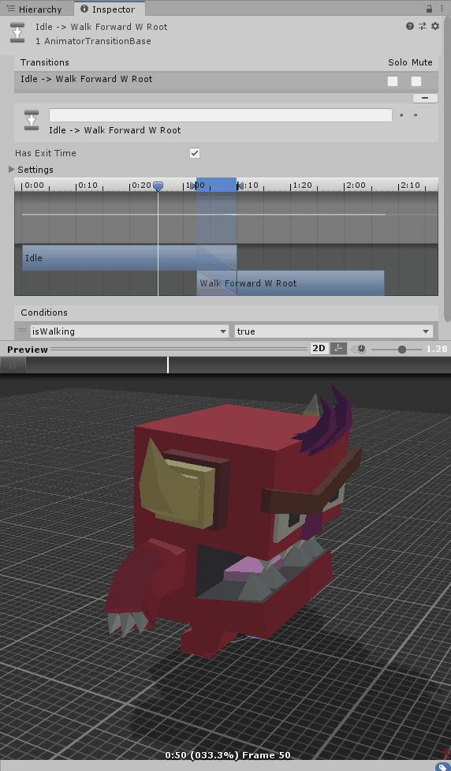

This documentation is served as a note for myself to learn game development. And I think you had learned object-oriented programming before.
Before we proceed, there are some prerequisites you'll need to followed:
- Unity 2019.01 or above
- C# or JavaScript programming, in this notes every scripts were written in C#.
- For 64-bit Windows 10, you might need a graphics card with DirectX10 capabilities (NVIDIA GeForce series I guessed, maybe you can find other graphics card beside of these). For more details about the requirements for Unity, you can check at here.
Some Basics Object-Oriented programming
Player Object
On the Hierachy tab, create an empty object and named it as Player, Create > 3D Object > Capsule, this capsule will be player body.
Now, you are going to write your first script in this project.
Do make sure that you always assigned negative value to gravity variable, otherwise the player body
will keep flying upwards.
After finished scripting, drags to the corresponding game objects.
Once you successfully set up the steps above, you can start wandering around with this capsule body.
using UnityEngine;
using System.Collections;
public class MouseCameraMovement : MonoBehaviour {
[SerializeField]
public float sensitivity = 100.0f;
public Transform playerBody;
public float xRotation = 0.0f;
// Start is called before the first frame update
void Start() {
// fixed your in-game screen view
Cursor.lockState = CursorLockMode.Locked;
}
// Update is called once per frame
void Update() {
float mouseX = Input.GetAxis("Mouse X") * sensitivity * Time.deltaTime;
float mouseY = Input.GetAxis("Mouse Y") * sensitivity * Time.deltaTime;
// x-rotation is opposite direction with y-direction
xRotation -= mouseY;
// clamped your view
xRotation = Mathf.Clamp(xRotation, -90.0f, 90.0f);
transform.localRotation = Quaternion.Euler(xRotation, 0f, 0f);
playerBody.Rotate(Vector3.up * mouseX);
}
}The y here denotes the distance (or displacement) of a freely falling object travelled, g, the accerelation
due to gravity of earth. And at last, of course, t is the time calculated in seconds.
In order to get velocity, you just need to differentiate the formula above.
You might learnt this before in high school physics,
void Update() {
// update per frame
var mouseDelta = new Vector2(Input.GetAxisRaw("Mouse X"), Input.GetAxisRaw("Mouse Y"));
var accelerate = sensitivity * smoothing;
mouseDelta = Vector2.Scale(mouseDelta, new Vector2(accelerate, accelerate));
smoothView.x = Mathf.Lerp(smoothView, mouseDelta, 1 / smoothing);
smoothView.y = Mathf.Lerp(smoothView, mouseDelta, 1 / smoothing);
mouseView += smoothView;
transform.localRotation = Quaternion.AngleAxis(-mouseView.y, Vector3.right);
character.transform.localRotation = Quaternion.AngleAxis(mouseView.x, character.transform.up);
}Sounds Effect (Audio source)
aaDay/Night cycle
Unlike our real world, the "earth" I builded here is flatten. But how did the sun and moon brighten up our flat world?
The yellow light source indicates the "sun", while the blue one is moon. circular motion around the world originSince this game is quite boring without any NPC, now we are going to create a hostile mob to make this game more interesting (The mob word here referred to the game objects that are moveable. Yes, I used to be a Minecraft fans before!). Unfortunately, the AI packages does not included in the Unity Packages at first. But you can download it from this github repo.

Click the Bake button, the navigation mesh surface (the glass-texture like layer) will generate

A singleton (not simpleton😂) is a class which allowed only one instance. The #region keyword
is just allowed you to collapse the code block, you can ignore it since it is not important.
How far can this blocky monster observed player? Let's see, inside the
OnDrawGizmosSelected function, we can start drawing a wire sphere around the
monster with the awareness radius 6 unit.
Usually when you imported some mobs model from asset store, you can find some animations for the 3D character.
inside the Start() function, add in this command to initialize an animator object.

using System.Collections;
using UnityEngine;
public class Bullet : MonoBehaviour {
public int damageCast = 1;
private IEnumerator ShotEffect() {
laserLine.enabled = true;
yield return shotDuration;
laserLine.enabled = false;
}
void Start() {
laserLine = GetComponent<LineRenderer>();
fpsCam = GetComponentInParent<Camera>();
}
}References
-
Brackeys, 2019 Oct 27, FIRST PERSON MOVEMENT in Unity - FPS Controller [Video]. Youtube
https://www.youtube.com/watch?v=_QajrabyTJc -
Unity,
https://learn.unity.com/tutorial/let-s-try-shooting-with-raycasts#5c7f8528edbc2a002053b468 - https://csharpindepth.com/articles/singleton